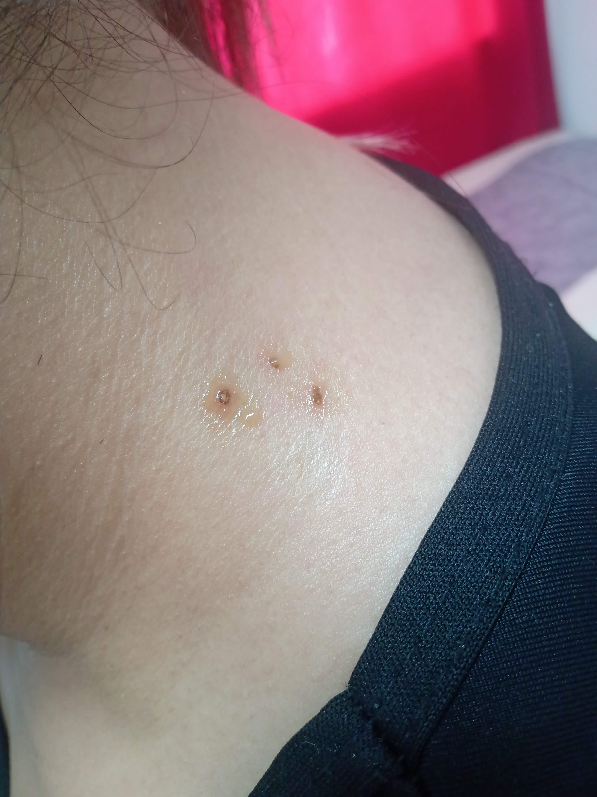

TRATAMIENTOS Y SUS BENEFICIOS
La cabina LED es utilizada para tratar diversas afecciones de la piel. Cada color penetra a distintas profundidades y ofrece beneficios especificos, lo que lo hace ideal para salones de belleza y centros de estética. Los tratamientos faciales con luz LED son una excelente opción para mejorar la salud y apariencia de la piel. Estos tratamientos utilizan diferentes longitudes de onda de luz para abordar problemas específicos de la piel, como el acné, las arrugas y la hiperpigmentación.
FUNCIONAMIENTOS Y BENEFICIOS DE CADA COLOR LED
Cada color de luz LED tiene un efecto diferente en la piel. Por ejemplo, la luz azul es efectiva para tratar el acné, mientras que la luz roja ayuda a reducir las arrugas y mejorar la elasticidad de la piel. La luz verde se utiliza para tratar manchas y decoloraciones, y la luz amarilla es ideal para mejorar la circulación sanguínea y dar luminosidad a la piel.
- BENEFICIOS
- Luz amarilla:
- -Estimula el sistema linfático
- -Reduce la inflamación
- -Ayuda a atenuar las manchas
- Luz verde:
- -Reduce la hiperpigmentación
- -Atenúa las manchas oscuras
- -Mejora el tono de la piel
- Luz azul:
- -Combate el acné
- -Reduce la inflamación
- -Destruye las bacterias causantes del acné
- Luz roja:
- -Estimula la producción de colágeno
- -Mejora la circulación sanguínea
- -Reduce las arrugas y líneas de expresión
Mascarilla Hisdroplástica
La mascarilla Hidroplástica es un tratamiento estético profesional utilizado en cosmetologia para mejorar la apariencia y salud de la piel del rostro. Esta mascarilla está diseñada para proporcionar una hidratación profunda, mejorar la elasticidad de la piel y promover la regeneración celular.
- Sus beneficios incluyen:
- - Hidratación intensa: La mascarilla ayuda a retener la humedad en la piel, dejándola suave y flexible.
- - Mejora de la textura de la piel: Ayuda a suavizar la piel áspera y a reducir la apariencia de líneas finas y arrugas.
- - Efecto calmante: Es ideal para pieles sensibles o irritadas, ya que ayuda a reducir el enrojecimiento y la inflamación.
- - Promueve la regeneración celular: Ayuda a renovar las células de la piel, mejorando su apariencia general.
Tratamiento AntiAge
Tiene como objetivo retrasar los signos del envejecimiento, mejorar la apariencia de la piel y promover la salud celular.Combina técnicas médicas, cosméticas y hábitos saludables para lograr resultados visibles y duraderos. Los beneficios de este tratamiento incluyen la reducción de arrugas, la mejora de la textura de la piel, la hidratación profunda y la estimulación de la producción de colágeno. Además, puede ayudar a mejorar la elasticidad de la piel, reducir manchas y proporcionar un aspecto más juvenil y radiante.
- Los beneficios del tratamiento AntiAge incluyen:
- - Reducción de arrugas y líneas de expresión
- - Mejora de la textura y tono de la piel
- - Aumento de la hidratación y luminosidad
- - Estimulación de la producción de colágeno
Extracción de verrugas
El PlasmaPen es un dispositivo de electroestimulación que utiliza plasma (energía de cuarta generación) para realizar tratamientos estéticos no quirúrgicos, principalmente enfocados en el rejuvenecimiento facial y corporal.A diferencia del láser o la radiofrecuencia, el PlasmaPen trabaja con descargas controladas de plasma para generar microlesiones en la piel, lo que estimula la producción de colágeno y elastina sin dañar las capas mas profundas.
- Los beneficios de la extracción de verrugas con PlasmaPen incluyen:
- - Procedimiento no invasivo y rápido
- - Mínimo tiempo de recuperación
- - Resultados visibles en pocas sesiones
- - Reducción de cicatrices y marcas
¿Por qué elegir nuestros tratamientos?
Ofrecemos tratamientos personalizados para cada tipo de piel, utilizando productos de alta calidad y técnicas avanzadas. Nos enfocamos en tu autoestima y bienestar, creando un ambiente relajante y profesional. Nuestro objetivo es que te sientas renovada y segura de ti misma después de cada tratamiento.